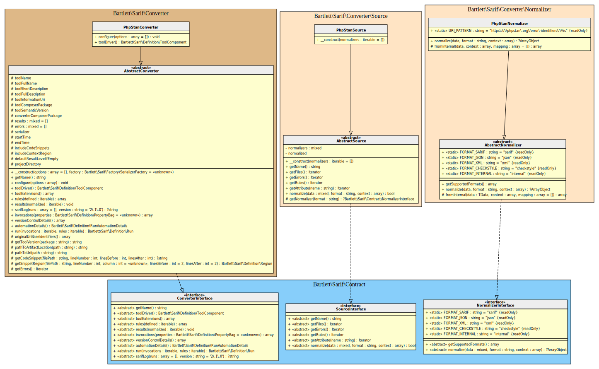
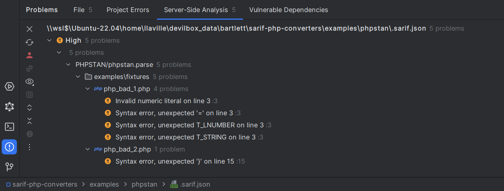
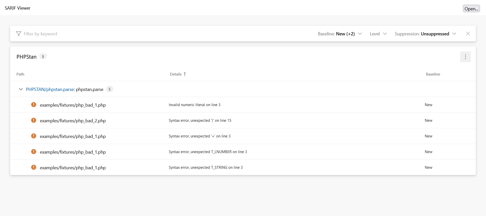

PHPStan Converter

Note
Available since version 1.0.0
Table Of Contents
- Requirements
- Installation
- Usage
- How to customize your converter
- Learn more
- IDE Integration
- Web SARIF viewer

Requirements
- PHPStan requires PHP version 8.1.0 or greater
- This SARIF converter requires at least PHPStan version 1.11.0
Installation
Then update your phpstan.neon.dist configuration file:
Usage
vendor/bin/phpstan analyse --error-format sarif --configuration phpstan.neon.dist --autoload-file bootstrap.php
How to customize your converter
There are many ways to customize render of your converter.
Make the SARIF report output human-readable
By default, all converters use the default \Bartlett\Sarif\Factory\PhpSerializerFactory
to return the SARIF JSON representation of your report.
But this serializer factory component, as native PHP json_encode function,
does not use whitespace in returned data to format it.
To make your report human-readable, you have to specify the \JSON_PRETTY_PRINT constant, as encoder option.
Here is the way to do it !
Create your formatter specialized class
<?php
use Bartlett\Sarif\Converter\PhpStanConverter;
use Bartlett\Sarif\Converter\Reporter\PhpStanFormatter;
class MySarifFormatter extends PhpStanFormatter
{
public function __construct(bool $prettyPrint)
{
parent::__construct(new PhpStanConverter(['format_output' => $prettyPrint]));
}
}
Create your own class loader to register custom serializer and converter (if any)
<?php
require_once dirname(__DIR__, 2) . '/vendor/autoload.php';
require_once __DIR__ . '/MySarifFormatter.php';
Then update your phpstan.neon configuration file
And finally, print the SARIF report
vendor/bin/phpstan analyse --error-format sarif --configuration phpstan.neon --autoload-file bootstrap.php
Fill the result level field to default value when empty
Note
Accordingly, to PhpStanConverter does not fill level field issue report,
the new version 1.1.0 added the default_result_level_if_empty option to configure any converter at runtime.
Even if default behaviour fixed the result level field to error now (only for PHPStan SARIF converter),
you still have ability to change it, and here is how to do now !
Create your formatter specialized class
<?php
use Bartlett\Sarif\Converter\PhpStanConverter;
use Bartlett\Sarif\Converter\Reporter\PhpStanFormatter;
class MySarifFormatter extends PhpStanFormatter
{
public function __construct(bool $prettyPrint, string $defaultResultLevel)
{
parent::__construct(
new PhpStanConverter(
[
'format_output' => $prettyPrint,
'default_result_level_if_empty' => $defaultResultLevel,
]
)
);
}
}
Create your own class loader to register custom serializer and converter (if any)
<?php
require_once dirname(__DIR__, 2) . '/vendor/autoload.php';
require_once __DIR__ . '/MySarifFormatter.php';
Then update your phpstan.neon configuration file
services:
errorFormatter.sarif:
class: MySarifFormatter
arguments:
prettyPrint: true
defaultResultLevel: "warning"
And finally, print the SARIF report
vendor/bin/phpstan analyse --error-format sarif --configuration phpstan.neon --autoload-file bootstrap.php
Learn more
- See demo
examples/phpstan/directory into repository.
IDE Integration
The SARIF report file [*].sarif.json is automagically recognized and interpreted by PhpStorm (2024).

Web SARIF viewer
With the React based component, you are able to explore a sarif report file previously generated.
For example:
